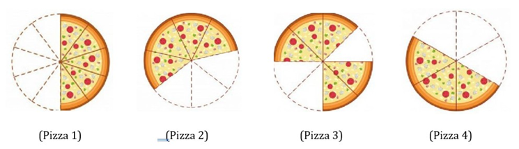
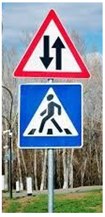
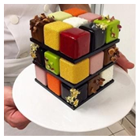
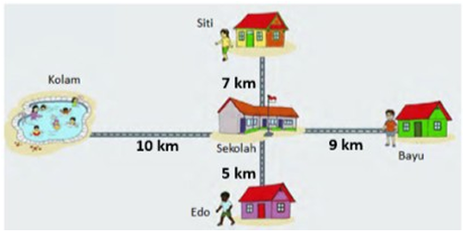
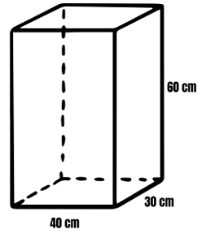
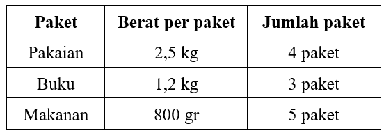
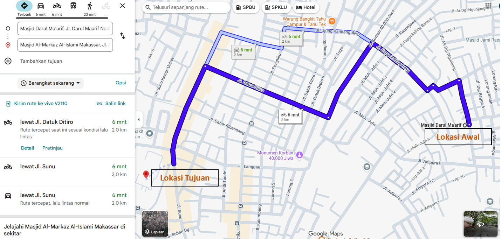
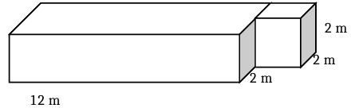
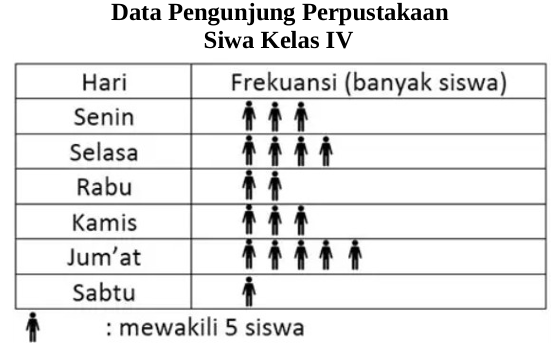
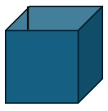

Berapakah bentuk pecahan senilai dari bagian pizza yang dimakan pada pizza 3?
Berdasarkan gambar pizza 3, maka lihat potongan pizza yang habis dimakan, lalu dibagi dengan total potongan pizza
Jawabannya : C. 3/5
Kita hitung besar nilai pizaa yang dimakan
Pizza 1 =
4
8
= 0,5
Pizza 2 =
3
7
= 0,43
Pizza 3 =
3
8
= 0,375
Pizza 4 =
3
6
= 0,5
Semakin besar nilai pecahan, semakin sedikit pizza yang dimakan, Sehingga urutannya adalah
- Pizza 4, pizza 1, pizza 2, pizza 3
- Pizza 1, pizza 4, pizza 2, pizza 3
Jawabannya : C. Pizza 4, Pizza 1, Pizza 2, Pizza 3
Kita hitung besar nilai pizaa yang dimakan
Pizza 1 =
4
8
= 0,5
Pizza 2 =
3
7
= 0,43
Pizza 3 =
3
8
= 0,375
Pizza 4 =
3
6
= 0,5
Semakin besar nilai pecahan, semakin sedikit pizza yang dimakan, Sehingga urutannya adalah
- Pizza 4, pizza 1, pizza 2, pizza 3
- Pizza 1, pizza 4, pizza 2, pizza 3
Jawabannya : 1. B, 2. S, 3. S, 4. B
Kita hitung berdasarkan pilihannya
1. 3 x (3.000 + 2.000) = 3 x 5.000 = 15.000
2. 50.000 - 3.000 x 8 = 50.000 - 24.000 = 26.000
3. (35.000 – 5.000) : 2 = 30.000 : 2 = 15.000
4. 15.000 + 5.000 : 2.500 = 15.000 + 2 = 15.002
Jawabannya : 1 dan 3
Belum ada pembahasan
Jawaban : ...
| No. | Pernyataan | Benar | Salah |
|---|---|---|---|
| 1. | Tika dan Ria berlatih bersama tiap 20 hari sekali. | ||
| 2. | Pada Bulan Agustus, Tika dan Ria akan berlatih bersama sebanyak 3 kali. | ||
| 3. | Tika dan Ria akan berlatih bersama lagi pada tanggal 21 Agustus. |

Pembahasannya belum ada.
Jawabannya : 1. S, 2. B, 3. B, 4. B


Dengan memperhatikan baik-baik gambar
Jawabannya : A dan B

Diketahui :
Panjang = 40 cm
Lebar = 30 cm
TInggi = 60 cm
Volume = p x l x t
Volume = 40 cm x 30 cm x 60 cm
Volume = 72.000 cm^3
1.000 cm^3 = 1 liter = 1 dm^3
72.000 cm^3 = 72 liter
1 liter = 10 desiliter (dℓ)
72 liter = 72 x 10 desiliter = 720 (dℓ)
Jawaban : 1 dan 4

Perhitungan Total Berat Barang
Pakaian : 4 x 2,5 kg = 10 kg
Buku : 3 x 1,2 kg = 3,6 kg
Makanan : 5 x 800 gr = 5 x 0,8 kg = 4 kg
Total berat = 10 kg + 3,6 kg + 4 kg = 17,6 kg
Pernyataan:
1. Berat barang seluruhnya14,4 kg (salah)
2. Berat barang seluruhnya17,6 kg (Benar)
3. Pak Budi melakukan perjalanan untuk mengirimkan semua paket sebanyak 2 kali, karena 1 kali perjalanan hanya 15 kg, sedangkan totalnya 17,6 kg. (Benar)
4. Pak Budi harus melakukan perjalanan untuk mengirimkan semua paket sebanyak 1 kali.
Jawaban : B dan C
| No. | Pernyataan | Benar | Salah |
|---|---|---|---|
| 1. | Total berat mangga yang dimiliki Bu Rina adalah 27,5 kg. | ||
| 2. | Jumlah kantong plastik yang bisa diisi jika setiap kantong berisi 2,5 kg mangga adalah 10 kantong. | ||
| 3. | Total berat mangga yang dimiliki Bu Rina adalah 37,5 kg. | ||
| 4. | Jumlah kantong plastik yang bisa diisi jika setiap kantong berisi 2,5 kg mangga adalah kantong 15 kantong. |

Berdasarkan ilustrasi tersebut, pilihlah jwaban berikut ini yang bernilai benar (Jawaban bisa lebih dari 1).
Dengan memperhatikan gambar google map:
Jawaban : 1. Benar, 2 Salah, 3. Benar, 4. Benar

| No. | Pernyataan | Benar | Salah |
|---|---|---|---|
| 1. | Volume keseluruhan kolam adalah 120 m3. | ||
| 2. | Volume air yang dibutuhkan untuk mengisi kolam adalah 78 m3. | ||
| 3. | Volume balok 6 kali lipat dari volume kubus. | ||
| 4. | Selisih volume balok dan kubus adalah 88 m3. |
Analisis Sudut Masing-Masing Bangun Datar:
- Bangun Datar 1 (Segitiga Sama Kaki): Memiliki 2 sudut yang sama besar (pada alasnya). Karena panjang sisinya adalah 8 cm, 5 cm, dan 5 cm (bukan segitiga sama sisi), besar sudut-sudutnya bukan 60°
- Bangun Datar 2 (Persegi): Semua sudut pada persegi merupakan sudut siku-siku, yaitu 90°
- Bangun Datar 3 (Persegi Panjang): Semua sudut pada persegi panjang juga merupakan sudut siku-siku (90°), sehingga besar sudutnya sama dengan Bangun Datar 2.
Jawaban : 1. S, 2, B, 3. B, 4. S

Berdasarkan data Bu Tanti, pengunjung perpustakaan pada hari Jumat sebanyak ....| No. | Pernyataan | Benar | Salah |
|---|---|---|---|
| 1. | Banyak siswa yang mungkin ikut lomba sebanyak 8 orang. | ||
| 2. | Selisih banyak siswa yang mungkin dan tidak mungkin ikut lomba adalah 1 orang. | ||
| 3. | Banyak siswa yang tidak mungkin ikut lomba ada 10 orang. | ||
| 4. | Terdapat 15 siswa yang mengikuti tes kecepatan lari. |

Analisis Sudut Masing-Masing Bangun Datar:
- Bangun Datar 1 (Segitiga Sama Kaki): Memiliki 2 sudut yang sama besar (pada alasnya). Karena panjang sisinya adalah 8 cm, 5 cm, dan 5 cm (bukan segitiga sama sisi), besar sudut-sudutnya bukan 60°
- Bangun Datar 2 (Persegi): Semua sudut pada persegi merupakan sudut siku-siku, yaitu 90°
- Bangun Datar 3 (Persegi Panjang): Semua sudut pada persegi panjang juga merupakan sudut siku-siku (90°), sehingga besar sudutnya sama dengan Bangun Datar 2.
Jawaban : 1. S, 2, B, 3. B, 4. S
Terima kasih telah mengerjakan ujian ini.
Total Soal: 0
Soal Dikerjakan: 0
Skor/Poin Anda: 0
(Skor Maksimal 100)